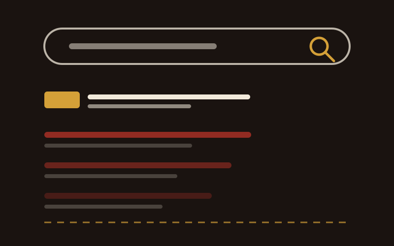
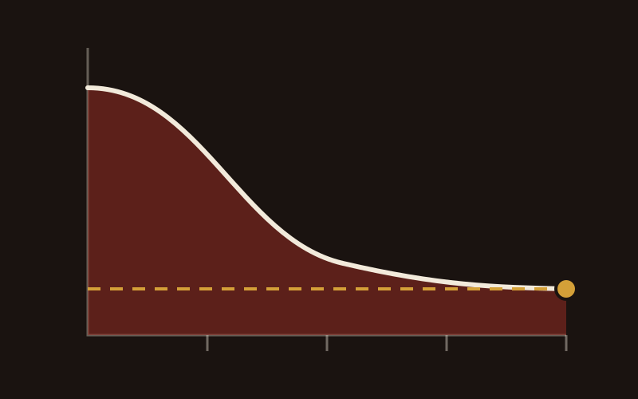

NDIS Digital Marketing & Acceleration
Digital is how small and medium providers get found. Here is what belongs in the plan.
Read more
Google Ads puts you in front of people who are already looking for a provider. Here is how the platform actually works, and where the budget goes if the account is set up badly.
Google Ads runs on pay per click. Your ad can show to anyone searching a term you have bid on, and you pay only when somebody clicks it. That one fact is what separates it from every other channel on this site. You are not buying attention. You are buying the last few seconds before a decision.
The terms that matter to a provider are the ones a family types when they have run out of patience. NDIS support services. Disability support Parramatta. NDIS therapy services. Longer phrases work harder than short ones: NDIS support for autism in Blacktown brings fewer people and a much higher proportion of the right ones.
When somebody searches, Google runs an auction. Where your ad lands depends on what you bid and on Quality Score, which is Google's read on how relevant your ad and your landing page are to what was actually typed. A high Quality Score buys a better position for less money. A low one means paying more to sit lower, which is the expensive way to find out that your landing page does not match your ad.
You set what you are willing to pay per click. What it costs to hold the top spot is set by the market, so the more providers bidding on a term, the more that term costs.
Text ads reach people who are searching right now, and for a provider that is where the enquiries are. Display ads build recognition. Video can show the team and the room. I start with text, because it is the only one of the three that catches somebody mid decision.

An account that is hard to read is an account nobody optimises. The structure is worth getting right on day one, because everything you do afterwards depends on being able to see which part is working.
One campaign per service or per audience. Ad groups inside each one, built around a single keyword theme. It sounds fussy. It is the difference between knowing that support coordination is bringing enquiries at $40 each, and knowing only that the ads cost you $2,000 last month.
Google Keyword Planner gives you search volume and suggestions, and that part is straightforward. The half that gets skipped is negative keywords, the terms you refuse to show for. Without them you pay for people searching NDIS jobs, people looking up the price guide, and every student researching an assignment. The negative list is what stops a budget leaking.
Write the ad to the search rather than to the brand. Say what you do, where you do it, and what happens next. Then send the click to a page that answers the same question the ad was written for. A click that lands on a homepage and has to go looking is a click you paid for and lost. It will be on a phone, so that page has to work there first.

The account is rarely the thing that is broken. The page the click lands on usually is.
Chris Lapa
Conversion tracking goes in before a single dollar goes out. Form submissions, phone calls, and the enquiries that arrive by neither. Without it you are reading clicks, and a click is not an enquiry.
Then test one thing at a time. Two headlines against each other, or two landing pages, or two audiences. Change three things at once and you learn nothing reliable about any of them.
Watch it weekly at the start and monthly once it settles. Google's automated bidding is genuinely good, and it is good only once the account has enough conversions to learn from, which is a few weeks in rather than on day one.

If you take three things from this piece, take these.
Every channel on this site does something the others cannot. This is what this one is for.
When I audit a provider's account, the waste is almost never exotic. It is one of these four.
You can run this yourself. Google's own tutorials are good, the interface is not hard, and a small single service account is a reasonable place to learn what the numbers mean.
Bring somebody in when the account is more than you have hours for, or when it has been running for months without getting better. What you are paying for is the reading of it: ad copy that earns its Quality Score, a targeting strategy rather than a keyword list, split tests that answer one question at a time, and somebody who will tell you when a campaign should be switched off.
If the enquiries are arriving and then going nowhere, the account is not your problem. That is the enquiry process, and it is a different fix.
You pay only when somebody clicks, and you set the budget, so that figure is the ceiling on what you can spend. What you pay per click is the part you do not fully control: you name the maximum, and the market decides what the top position actually costs. The more providers bidding on a term, the more that term costs to win.
It varies with your service and how many others are bidding. With the tracking in place and the account tidied, a few weeks is a fair expectation before the numbers mean anything. Anyone promising you enquiries in week one is guessing.
Yes. Google publishes plenty of tutorials and the interface is designed to be used by people who are not specialists. Where it gets hard is a multi service account, or one that needs to improve rather than simply run.
Social media ads reach families before they start searching, which is a different job and a useful one. SEO catches the same searches Google Ads does, without the click cost, and it takes months rather than days. The three work best together, and the order depends on whether you need enquiries this month or a year from now.
Open an account at ads.google.com and work through Google's setup. Before you switch anything on, get conversion tracking working and write your first negative keyword list. Those two steps are worth more than a bigger budget.
Google Ads is one channel of seven. If you would rather have the whole pipeline run as one plan, that is Managed Growth.

Digital is how small and medium providers get found. Here is what belongs in the plan.
Read more

How marketing and referrals work together to grow a provider, and how to tell which one is doing the work.
Read more

SEO makes your website show up when someone searches for what you do. Here's how that compounds over time.
Read more
The audit is free.